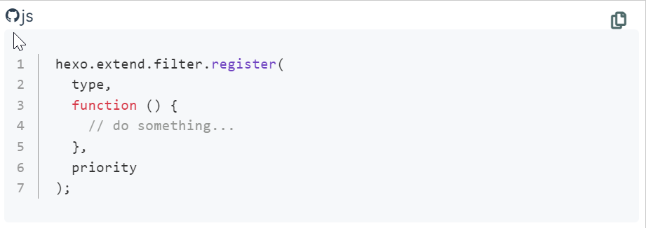
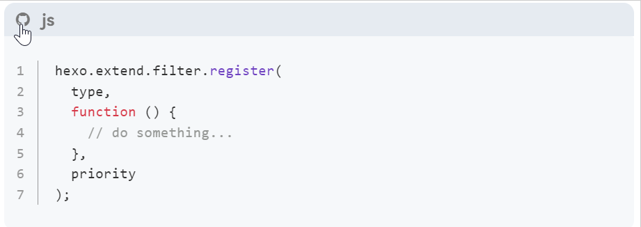

使用 Hexo 过滤器（Filter）实现 Fluid 主题的代码折叠。
过滤器简介
过滤器（Filter）细节参见「官方文档」。
过滤器（Filter）用于修改特定文件，Hexo 将这些文件依序传给过滤器，而过滤器可以针对文件进行修改。注册过滤器的方式如下：
JavaScript
|
|
priority 是过滤器的优先级，priority 值越小，过滤器会越早执行，默认的 priority 是 10。
思路
我们可以自定义一个过滤器，在文章完成渲染后增加折叠功能的代码。
折叠功能借助 Bootstrap - Collapse 实现。此外，Fluid 主题已引入 Bootstrap，我们无需再次引入。
实现
在 scripts/ 目录下新建文件 <fileName>.js，文件名自定，内容如下：
JavaScript
|
|
此时的效果如图（使用 highlightjs）：

增加相应的样式，进行美化：
Stylus
|
|
效果如下：
